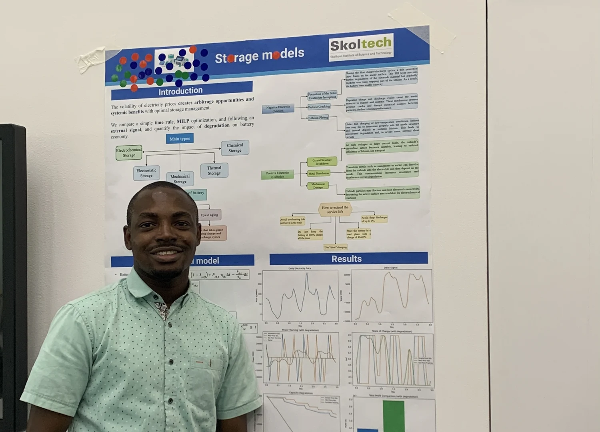
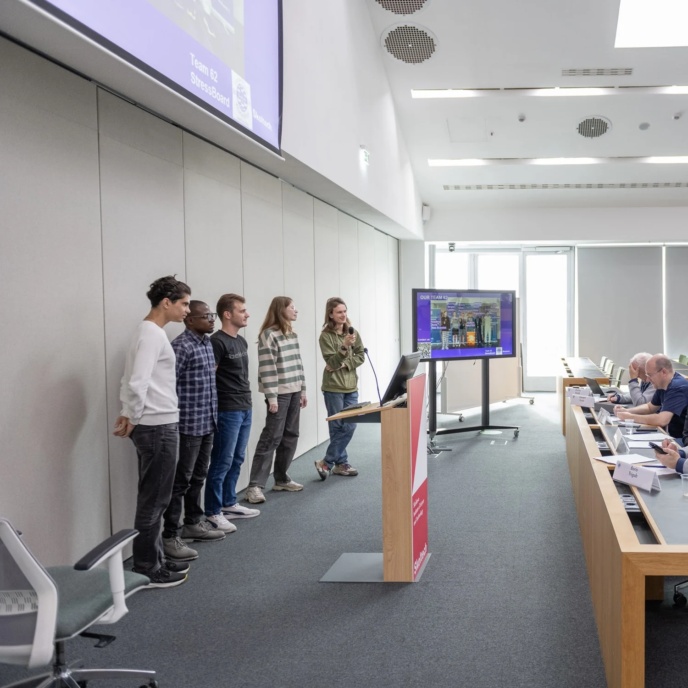

Team project · 2026 · Data-driven modelling
Faster mode decomposition
for large flow data.
With Alexander Marukhin, Andrej Sapronchev and Mikhail Derevyanchenko, I worked on a tensor-train version of higher-order dynamic mode decomposition (hoDMD), for the Skoltech course Data-driven Modelling and Analysis for Applied Dynamic Systems. It replaces the expensive full-space SVD with a compact low-rank projection, so large spatiotemporal fields can be analysed much faster.
On cylinder-wake vorticity data (89,351 points per snapshot), the tensor-train method reproduced the vortex street with 15 basis vectors and nearly the same error as the PyDMD baseline, while the core solve ran 26–47× faster. On held-out frames it was up to about 3× more accurate, because the low-rank projection acts as a regulariser.
My part: the mathematical framework, correctness testing of both implementations and the full pipeline, the written synthesis of methods and results, and milestone planning for the team.

Team project · 2026 · IoT monitoring & control
A plant with its own
monitoring system.
Flora Wand is a stick-style monitor for house plants, built by Team 9 for the Skoltech course Introduction to IoT with Alexander Bashirov and Mikhail Kiselev. I was the project manager and a hardware engineer.
Each stick is an independent unit: an ESP8266 (ESP-12F) microcontroller reads a DHT11 temperature and humidity sensor, a BH1750 light sensor and a capacitive soil-moisture sensor, and drives a small submersible pump through a DRV8833 driver. It runs from a 10,000 mAh power bank in a 3D-printed body, sends data over Wi-Fi to a server, and can be checked remotely through a Telegram bot.
The parts cost about 2,100 roubles, against roughly 3,500 to 8,300 roubles for comparable commercial monitors, most of which cannot water the plant. Our power budget of about 216 mAh per day gives around 30 days on one power bank; 97% of that energy goes to the sensor checks, so longer sleep between readings is the next step.
Project notes on LinkedIn ↗Course project · 2025 · Distribution networks
Where should a battery
sit on the grid?
With Salbak Mongush, for the Skoltech course Fundamentals of Power Systems, I modelled the IEEE 33-bus radial distribution network in pandapower with a 24-hour load profile that adds a 25% morning peak and a 60% evening peak. Running an AC power flow every hour showed the most remote buses (17 and 32) falling below the 0.9 p.u. voltage limit at the evening peak.
We then tested every bus as a battery location, computed the capacity each one needs to keep voltages within limits, and ranked the buses with a heat map. We also reviewed 13 recent studies on battery siting and sizing, from MILP to genetic algorithms and particle swarm optimisation. The photograph shows me presenting that review.

Course project · 2025 · Storage models
How should a battery
be operated?
With Mariya Sokolovskaya and Artem Blinov, I compared three ways to run a grid battery against volatile electricity prices: a simple time rule, mixed-integer (MILP) optimisation, and following an external set-point signal. Degradation was modelled with a piecewise-linear depth-of-discharge model that shrinks the usable capacity as the battery cycles.
MILP optimisation earned about five times the profit of the simple rule. Following the external signal lost money and wore the battery fastest, with 14.4% capacity loss against 4.7% for MILP and 5.6% for the simple rule. Counting degradation cut MILP profit by only 1.4%, compared with 4.0% for the simple rule.
The storage-models poster is a separate project from the Sharjah PV and storage study above.
See the presentation ↗
Team project · StressBoard
Smartwatch signals,
in context.
With Team 62, I worked on StressBoard, a prototype combining smartwatch data, questionnaire inputs, and a dashboard to explore stress and wellbeing.
The photograph shows us presenting the team project. The shared presentation describes the concept and prototype.
View the team presentation ↗